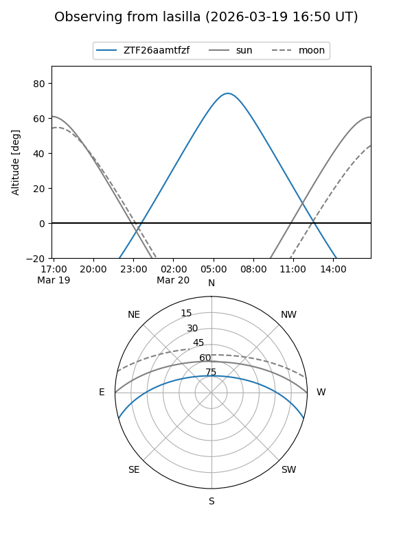
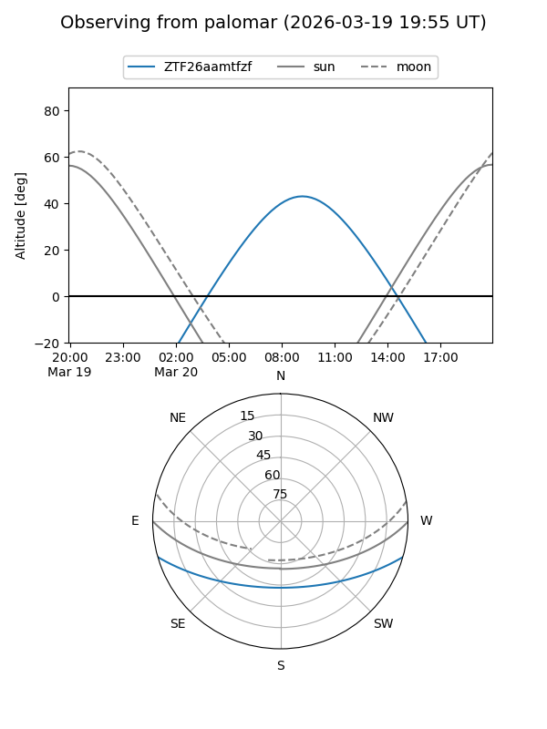

ZTF26aamtfzf
Target ZTF26aamtfzf at 2026-03-20 11:09
Aliases and brokers:
FINK: link
Lasair: link
ALeRCE: link
alt names
ZTF26aamtfzf (ztf,fink_ztf)
Coordinates:
equatorial (ra, dec) = 198.2019,-13.42425
equatorial (HMS+DMS) = 13:12:48.45,-13:25:27.31
galactic (l, b) = (310.8853,+49.11721)
Flags:
Photometry:
last ztfg=20.14
1 ztfg detections
Lightcurve
Visibility


Additional plots